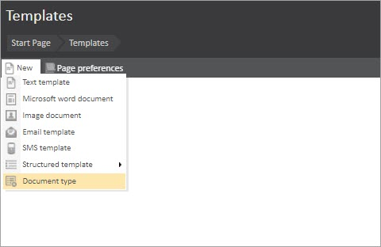
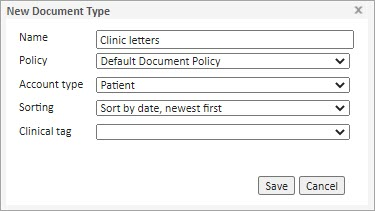

What is the purpose of the article?
This article outlines the steps needed to create a new document type.
Steps to create a new document type
Sub-folders are called Document Types. You can create as many of them as you need. To do this:
- From the start page, click on the 'Templates' tile
- Simply click on New > Document Type

- In the New Document type dialogue that appears
- Add a Name
- Select the Policy
- Select the Account Type (e.g. All Account types, Patient, Company, Medical Person)
- Select the Sorting order rule
- Select Clinical tag value if required
- Select Save when complete

From now this new Document Type will be visible in one of these folders whenever you create new Text, Word, Image documents, or structured templates.